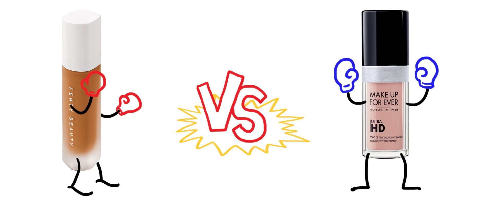

Let’s start in the US
Rihanna made headlines last fall when she launched Fenty Beauty, an intentionally inclusive makeup line created “so that women everywhere would be included.” Fenty’s liquid foundation product, Pro Filt’r, was so groundbreaking that it made it onto Time’s 25 Best Inventions of 2017 list. Its claim to fame: the foundation launched with 40 shades “made for women of all skin colors & undertones."
But as it turns out, a few other brands had 40 or more shades too, including Make Up For Ever, who was not about to let that fact go unnoticed. Shortly after Fenty’s launch, they challenged the newcomer in an Instagram post noting that 40 shades of foundation was “nothing new” since they’ve had 40 shades since 2015.
Rihanna was unimpressed. She quickly shot back with two comments: “lol. still ashy 🤷🏽♀️” and “shook.” In other words, Rihanna was implying that Make Up For Ever’s foundation lacked range and would still leave people of color looking “ashy” or slightly gray.
So how valid is her comeback? Actually, there’s a way to find out—with data.
How we measure inclusivity in a line of foundations
- We recorded the hexadecimal color code used to represent every available shade for a product on each brand’s website.
- Using Photoshop, we extracted the lightness values (based on the CIE Lab color model) from each color.
- We plotted these lightness values to see whether a foundation line caters toward lighter or darker skin tones.
Important disclaimer
Our measurements are a rough proxy for inclusivity. How a liquid foundation changes when it’s applied, whether it’s effective across different undertones and skin types, and how it looks after a day of wear are factors we did not account for. So please keep in mind that these findings represent only one piece of a larger story.

Both Fenty’s Pro Filt’r and Make Up For Ever’s Ultra HD foundation offer 40 different shades. But how inclusive are these colors? By extracting the lightness value of the color swatches on each brand’s website, we can get a better idea of whether their shades are evenly distributed or not.